Data Architecture
Overview
The data model is designed using a star schema. This means there is one main table (fact table) in the center, and several smaller tables (dimension tables) around it.
- The fact table stores the main values (like engagement and likes)
- The dimension tables describe the data (like date, content type, state, etc.)
All the dimension tables connect to the fact table, which makes it easy to analyze the data from different angles.
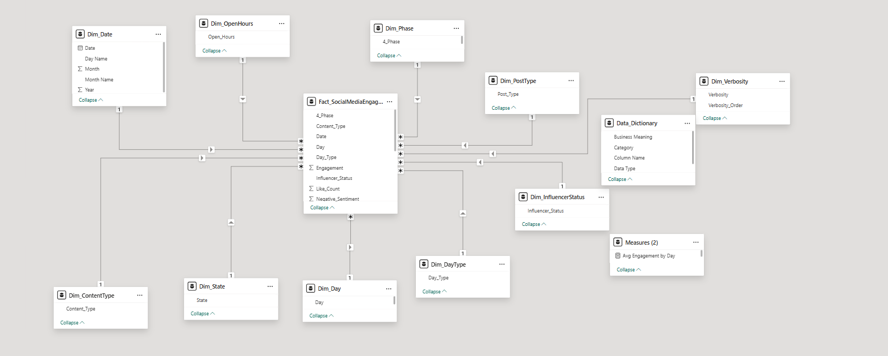
Fact Table
Fact Table Social Media Engagement
This is the main table in the model.
Each row represents one tweet.
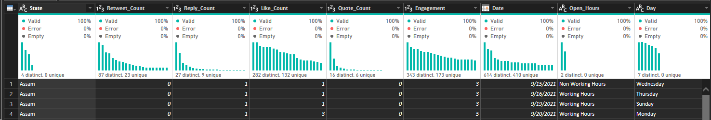
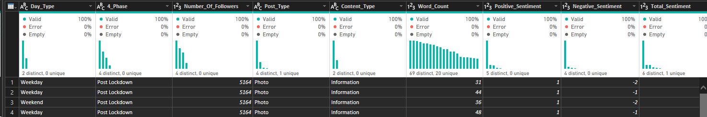
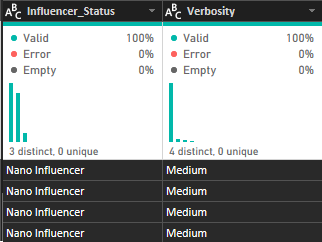
This table is used to:
- Calculate totals (e.g. total engagement)
- Compare values (e.g. engagement by content type)
Dimension Tables
These tables give extra information about the data in the fact table.
Dimension Table Date
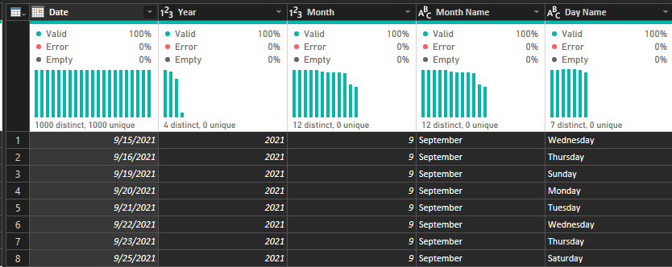
Used to:
- Analyze trends over time
- Compare engagement by month or year
Dimension Table Day
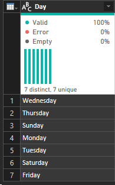
Used to:
- Analyze engagement per day
Dimension Table Day Type
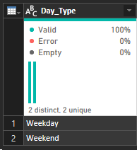
Used to:
- Compare weekend vs weekday performance
Dimension Table Open Hours
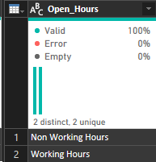
Used to:
- Find the best time to post
Dimension Table Content Type
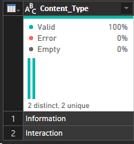
Used to:
- See which content performs best
Dimension Table Post Type
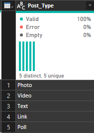
Used to:
- Analyze different types of posts
Dimension Table State
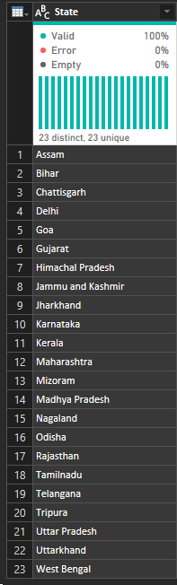
Used to:
- Compare engagement across locations
Dimension Table Influencer Status
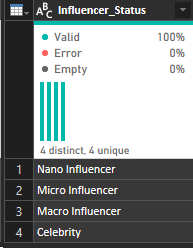
Used to:
- Compare high vs low influence accounts
Dimension Table Phase
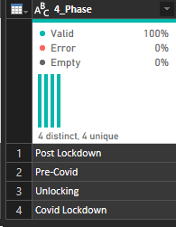
Used to:
- Analyze how engagement changed over time
Dimension Table Verbosity
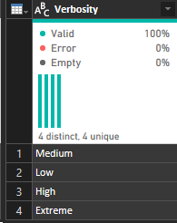
Used to:
- Write something here
Relationships
All tables are connected in this way:
Dimension → Fact (One-to-Many relationship)
This means:
- One value in a dimension (e.g. one date)
- Can relate to many tweets in the fact table
Example:
- One date → many tweets
- One content type → many tweets
- One state → many tweets
Important Points
- All dimension tables connect only to the fact table
- Dimension tables do not connect to each other
- Filtering always goes from dimension → fact
Example of how it works
If you select:
- Content Type = Video
- Day Type = Weekend
The model will filter the fact table and show:
- Only weekend video tweets
- Then calculate engagement
Summary
- The fact table stores numbers (engagement, likes, sentiment)
- Dimension tables store descriptions (date, content type, state, etc.)
- The model allows you to analyze data from many perspectives easily